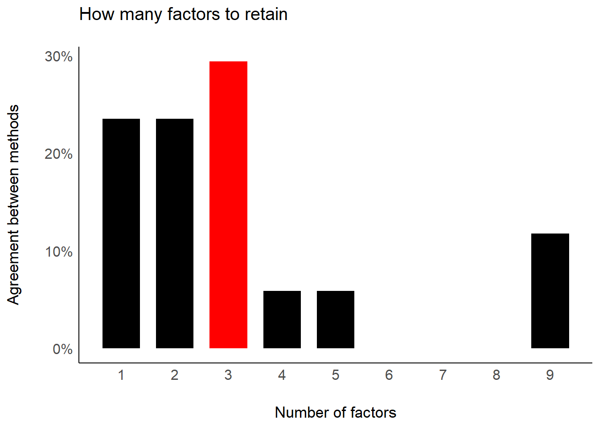
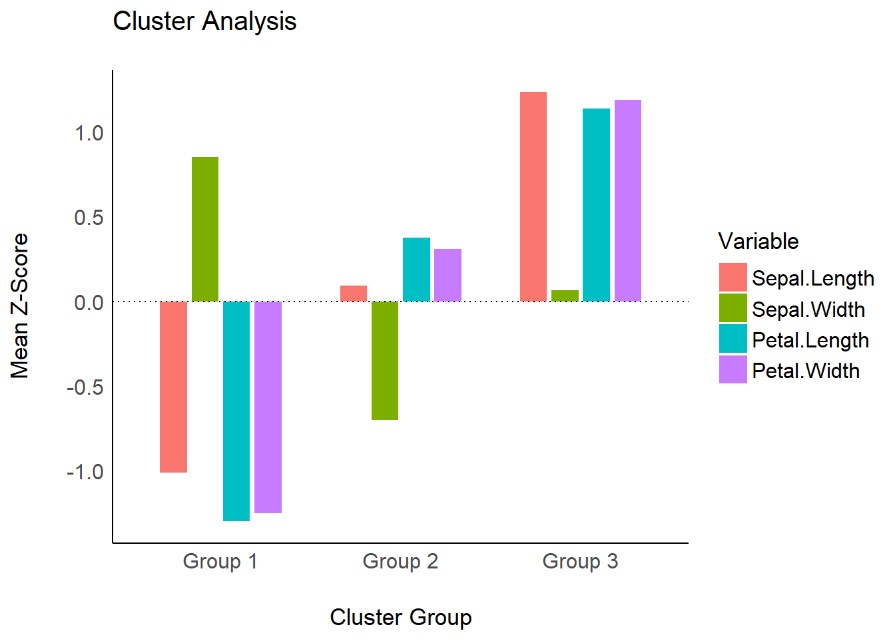
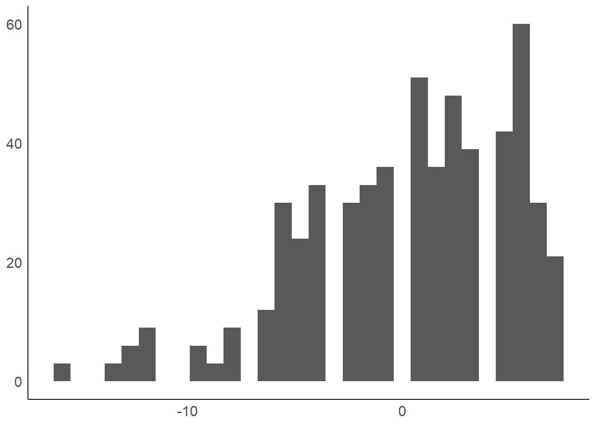
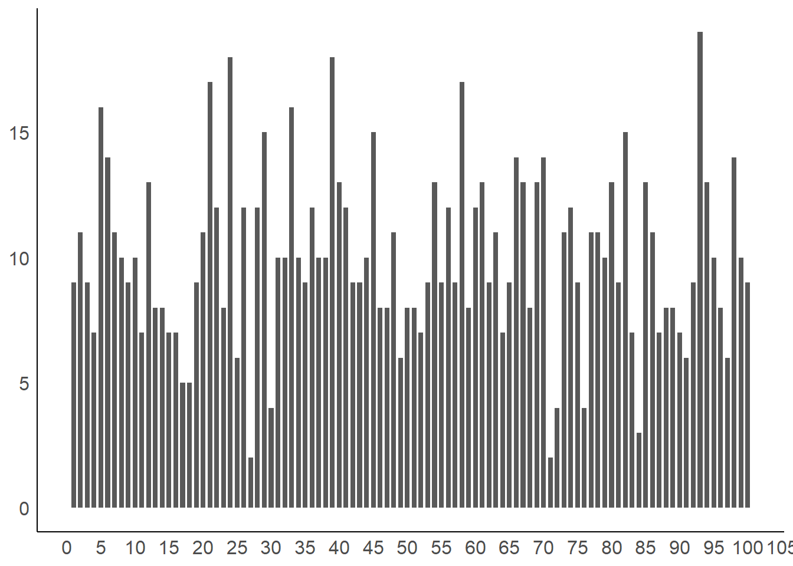

Setup and Model Fitting
library(parameters) library(effectsize) library(insight) library(see) library(glmmTMB) library(lme4) library(lavaan) library(metafor) library(ggplot2) library(splines) data("Salamanders") data("iris") data("sleepstudy") data("qol_cancer") set.seed(12345) sleepstudy$grp <- sample(1:5, size = 180, replace = TRUE) theme_set(theme_modern())
# fit three example model model1 <- glmmTMB( count ~ spp + mined + (1 | site), ziformula = ~ mined, family = poisson(), data = Salamanders ) model_parameters(model1) #> # Fixed Effects component #> #> Parameter | Coefficient | SE | 95% CI | z | df | p #> ------------------------------------------------------------------------ #> (Intercept) | -0.36 | 0.28 | [-0.90, 0.18] | -1.30 | 633 | 0.194 #> spp [PR] | -1.27 | 0.24 | [-1.74, -0.80] | -5.27 | 633 | < .001 #> spp [DM] | 0.27 | 0.14 | [ 0.00, 0.54] | 1.95 | 633 | 0.051 #> spp [EC-A] | -0.57 | 0.21 | [-0.97, -0.16] | -2.75 | 633 | 0.006 #> spp [EC-L] | 0.67 | 0.13 | [ 0.41, 0.92] | 5.20 | 633 | < .001 #> spp [DES-L] | 0.63 | 0.13 | [ 0.38, 0.87] | 4.96 | 633 | < .001 #> spp [DF] | 0.12 | 0.15 | [-0.17, 0.40] | 0.78 | 633 | 0.435 #> mined [no] | 1.27 | 0.27 | [ 0.74, 1.80] | 4.72 | 633 | < .001 #> #> # Zero-Inflated component #> #> Parameter | Coefficient | SE | 95% CI | z | df | p #> ------------------------------------------------------------------------ #> (Intercept) | 0.79 | 0.27 | [ 0.26, 1.32] | 2.90 | 633 | 0.004 #> mined [no] | -1.84 | 0.31 | [-2.46, -1.23] | -5.87 | 633 | < .001 model2 <- lm(Sepal.Length ~ Species * bs(Petal.Width, degree = 2), data = iris) model_parameters(model2) #> Parameter | Coefficient | SE | 95% CI | t | df | p #> -------------------------------------------------------------------------------------------------------------- #> (Intercept) | 4.79 | 0.17 | [ 4.45, 5.13] | 27.66 | 141 | < .001 #> Species [versicolor] | -3.73 | 2.14 | [ -7.96, 0.50] | -1.74 | 141 | 0.083 #> Species [virginica] | -2.67 | 2.88 | [ -8.36, 3.03] | -0.93 | 141 | 0.356 #> Petal.Width [1st degree] | 2.53 | 2.36 | [ -2.13, 7.20] | 1.07 | 141 | 0.285 #> Petal.Width [2nd degree] | -11.18 | 21.14 | [-52.98, 30.62] | -0.53 | 141 | 0.598 #> Species [versicolor] * Petal.Width [1st degree] | 5.48 | 4.84 | [ -4.09, 15.05] | 1.13 | 141 | 0.260 #> Species [virginica] * Petal.Width [1st degree] | 2.37 | 4.35 | [ -6.22, 10.96] | 0.54 | 141 | 0.587 #> Species [versicolor] * Petal.Width [2nd degree] | 14.84 | 21.16 | [-26.99, 56.68] | 0.70 | 141 | 0.484 #> Species [virginica] * Petal.Width [2nd degree] | 15.81 | 21.32 | [-26.35, 57.96] | 0.74 | 141 | 0.460 model3 <- lmer( Reaction ~ Days + (1 | grp ) + (1 | Subject), data = sleepstudy ) model4 <- lm(QoL ~ time + age + education, data = qol_cancer)
Model Parameters
(related function documentation)
The plot()-method for model_parameters() creates a so called “forest plot”. In case of models with multiple components, parameters are separated into facets by model component.
result <- model_parameters(model1) plot(result)

As compared to the classical summary()-output, model_parameters(), and hence the plot()-method, tries to create human readable, prettier parameters names.
result <- model_parameters(model2) plot(result)

Simulated Model Parameters
simulate_parameters() computes simulated draws of parameters and their related indices such as Confidence Intervals (CI) and p-values. Simulating parameter draws can be seen as a (computationally faster) alternative to bootstrapping.
As simulate_parameters() is based on simulate_model() and thus simulates many draws for each parameter, plot() will produce similar plots as the density estimation plots from Bayesian models.
result <- simulate_parameters(model1) plot(result)

plot(result, stack = FALSE)

plot(result, n_columns = 2)

plot(result, n_columns = 2, stack = FALSE)

Model Parameters of SEM models
structure <- ' visual =~ x1 + x2 + x3 textual =~ x4 + x5 + x6 speed =~ x7 + x8 + x9 ' model <- lavaan::cfa(structure, data = HolzingerSwineford1939) result <- parameters::model_parameters(model) plot(result)

Model Parameters of Bayesian models
model_parameters() for Bayesian models will produce “forest plots” (instead of density estimations).
# We download the model to save computation time. Here is the code # to refit the exact model used below... # zinb <- read.csv("http://stats.idre.ucla.edu/stat/data/fish.csv") # set.seed(123) # model <- brm(bf( # count ~ persons + child + camper + (1 | persons), # zi ~ child + camper + (1 | persons) # ), # data = zinb, # family = zero_inflated_poisson() # ) brms_model <- insight::download_model("brms_zi_2") result <- model_parameters(brms_model, effects = "all", component = "all") plot(result)

Including group levels of random effects
result <- model_parameters(brms_model, effects = "all", component = "all", group_level = TRUE) plot(result)


Including Intercepts and Variance Estimates for Random Intercepts
plot(result, show_intercept = TRUE)

Model Parameters of Meta-Analysis models
mydat <- data.frame( effectsize = c(-0.393, 0.675, 0.282, -1.398), standarderror = c(0.317, 0.317, 0.13, 0.36) ) ma <- rma(yi = effectsize, sei = standarderror, method = "REML", data = mydat) result <- model_parameters(ma) result #> Parameter | Coefficient | SE | 95% CI | z | p | Weight #> ------------------------------------------------------------------------- #> Study 1 | -0.39 | 0.32 | [-1.01, 0.23] | -1.24 | 0.215 | 9.95 #> Study 2 | 0.68 | 0.32 | [ 0.05, 1.30] | 2.13 | 0.033 | 9.95 #> Study 3 | 0.28 | 0.13 | [ 0.03, 0.54] | 2.17 | 0.030 | 59.17 #> Study 4 | -1.40 | 0.36 | [-2.10, -0.69] | -3.88 | < .001 | 7.72 #> Overall | -0.18 | 0.44 | [-1.05, 0.68] | -0.42 | 0.676 | plot(result)

Model Parameters of Meta-Analysis Models with Subgroups
set.seed(123) data(dat.bcg) dat <- escalc( measure = "RR", ai = tpos, bi = tneg, ci = cpos, di = cneg, data = dat.bcg ) dat$disease <- sample(c("Cancer", "CVD", "Depression"), size = nrow(dat), replace = TRUE) model <- rma(yi, vi, mods = ~ disease, data = dat, digits = 3, slab = author) result <- model_parameters(model) result #> # Depression #> #> Parameter | Coefficient | SE | 95% CI | z | p | Weight #> ------------------------------------------------------------------------------------ #> Aronson | -0.89 | 0.57 | [-2.01, 0.23] | -1.56 | 0.119 | 3.07 #> Ferguson & Simes | -1.59 | 0.44 | [-2.45, -0.72] | -3.59 | < .001 | 5.14 #> Rosenthal et al.1 | -1.35 | 0.64 | [-2.61, -0.08] | -2.09 | 0.036 | 2.41 #> Frimodt-Moller et al | -0.22 | 0.23 | [-0.66, 0.23] | -0.96 | 0.336 | 19.53 #> Coetzee & Berjak | -0.47 | 0.24 | [-0.94, 0.00] | -1.98 | 0.048 | 17.72 #> Overall | -0.12 | 0.59 | [-1.28, 1.04] | -0.20 | 0.841 | #> #> # CVD #> #> Parameter | Coefficient | SE | 95% CI | z | p | Weight #> ----------------------------------------------------------------------------------- #> Hart & Sutherland | -1.44 | 0.14 | [-1.72, -1.16] | -10.19 | < .001 | 49.97 #> Stein & Aronson | -0.79 | 0.08 | [-0.95, -0.62] | -9.46 | < .001 | 144.81 #> Vandiviere et al | -1.62 | 0.47 | [-2.55, -0.70] | -3.43 | < .001 | 4.48 #> TPT Madras | 0.01 | 0.06 | [-0.11, 0.14] | 0.19 | 0.849 | 252.42 #> Comstock et al.1 | -0.34 | 0.11 | [-0.56, -0.12] | -3.05 | 0.002 | 80.57 #> Comstock & Webster | 0.45 | 0.73 | [-0.98, 1.88] | 0.61 | 0.541 | 1.88 #> Overall | 0.03 | 0.56 | [-1.08, 1.13] | 0.05 | 0.963 | #> #> # Cancer #> #> Parameter | Coefficient | SE | 95% CI | z | p | Weight #> --------------------------------------------------------------------------------- #> Rosenthal et al.2 | -1.37 | 0.27 | [-1.90, -0.84] | -5.07 | < .001 | 13.69 #> Comstock et al.2 | -0.02 | 0.27 | [-0.54, 0.51] | -0.06 | 0.948 | 14.00 #> Overall | -0.69 | 0.49 | [-1.65, 0.26] | -1.42 | 0.155 | plot(result)

Equivalence Testing
(related function documentation)
For fixed effects
# default rules, like in bayestestR::equivalence_test() result <- equivalence_test(model4) result #> # Test for Practical Equivalence #> #> ROPE: [-1.99 1.99] #> #> Parameter H0 inside ROPE 95% CI #> (Intercept) Rejected 0.00 % [58.46 69.28] #> time Undecided 78.11 % [-1.07 2.85] #> age Accepted 100.00 % [-0.32 0.37] #> educationmid Rejected 0.00 % [ 4.43 13.09] #> educationhigh Rejected 0.00 % [ 9.33 19.38] plot(result)

result <- equivalence_test(model4, rule = "cet") result #> # Conditional Equivalence Testing #> #> ROPE: [-1.99 1.99] #> #> Parameter H0 inside ROPE 90% CI #> (Intercept) Rejected 0.00 % [59.33 68.41] #> time Undecided 83.52 % [-0.76 2.53] #> age Accepted 100.00 % [-0.26 0.32] #> educationmid Rejected 0.00 % [ 5.13 12.39] #> educationhigh Rejected 0.00 % [10.14 18.57] plot(result)

For random effects
result <- equivalence_test(model3, effects = "random") result #> # Test for Practical Equivalence #> #> ROPE: [-5.63 5.63] #> #> Group: grp #> #> Parameter H0 inside ROPE 95% CI #> 1 Accepted 100.00 % [-2.50 4.87] #> 2 Accepted 100.00 % [-3.85 3.43] #> 3 Accepted 100.00 % [-3.92 3.42] #> 4 Accepted 100.00 % [-4.15 3.19] #> 5 Accepted 100.00 % [-3.92 3.44] #> #> Group: Subject #> #> Parameter H0 inside ROPE 95% CI #> 308 Rejected 0.00 % [ 22.22 59.50] #> 309 Rejected 0.00 % [-96.51 -59.25] #> 310 Rejected 0.00 % [-81.91 -44.66] #> 330 Undecided 30.22 % [-14.32 22.96] #> 331 Undecided 30.25 % [ -8.44 28.80] #> 332 Undecided 30.23 % [-10.17 27.10] #> 333 Undecided 20.99 % [ -2.19 35.06] #> 334 Undecided 30.21 % [-21.65 15.64] #> 335 Rejected 0.00 % [-64.10 -26.85] #> 337 Rejected 0.00 % [ 53.55 90.78] #> 349 Undecided 9.06 % [-39.58 -2.25] #> 350 Undecided 26.94 % [ -4.41 32.88] #> 351 Undecided 30.18 % [-26.74 10.59] #> 352 Rejected 0.00 % [ 17.76 55.12] #> 369 Undecided 30.25 % [-11.65 25.59] #> 370 Undecided 30.20 % [-24.96 12.34] #> 371 Undecided 30.25 % [-21.96 15.28] #> 372 Undecided 16.26 % [ -0.43 36.84] plot(result)

From simulated model parameters
simulated_parameters <- simulate_model(model1, component = "conditional") result <- equivalence_test(simulated_parameters) result #> # Test for Practical Equivalence #> #> ROPE: [-0.10 0.10] #> #> Parameter | H0 | inside ROPE | 95% HDI #> ----------------------------------------------------- #> (Intercept) | Undecided | 12.41 % | [-0.86 0.23] #> sppPR | Rejected | 0.00 % | [-1.74 -0.84] #> sppDM | Undecided | 10.94 % | [-0.01 0.51] #> sppEC-A | Rejected | 0.00 % | [-0.96 -0.19] #> sppEC-L | Rejected | 0.00 % | [ 0.41 0.91] #> sppDES-L | Rejected | 0.00 % | [ 0.39 0.86] #> sppDF | Undecided | 38.70 % | [-0.16 0.38] #> minedno | Rejected | 0.00 % | [ 0.67 1.77] plot(result)

Principal Component Analysis
(related function documentation)
data(mtcars) result <- principal_components(mtcars[, 1:7], n = "all", threshold = 0.2) result #> # Loadings from Principal Component Analysis (no rotation) #> #> Variable | PC1 | PC2 | PC3 | PC4 | PC5 | PC6 | Complexity #> ------------------------------------------------------------------- #> mpg | -0.93 | | | -0.30 | | | 1.30 #> cyl | 0.96 | | | | | -0.21 | 1.18 #> disp | 0.95 | | | -0.23 | | | 1.16 #> hp | 0.87 | 0.36 | | | 0.30 | | 1.64 #> drat | -0.75 | 0.48 | 0.44 | | | | 2.47 #> wt | 0.88 | -0.35 | 0.26 | | | | 1.54 #> qsec | -0.54 | -0.81 | | | | | 1.96 #> #> The 6 principal components accounted for 99.30% of the total variance of the original data (PC1 = 72.66%, PC2 = 16.52%, PC3 = 4.93%, PC4 = 2.26%, PC5 = 1.85%, PC6 = 1.08%). plot(result)

result <- principal_components( mtcars[, 1:7], n = 3, rotation = "varimax", threshold = "max", sort = TRUE ) result #> # Rotated loadings from Principal Component Analysis (varimax-rotation) #> #> Variable | RC1 | RC2 | RC3 | Complexity | Uniqueness | MSA #> ----------------------------------------------------------------- #> wt | 0.91 | | | 1.31 | 0.03 | 0.77 #> mpg | -0.82 | | | 1.70 | 0.11 | 0.87 #> disp | 0.79 | | | 1.95 | 0.08 | 0.85 #> cyl | 0.64 | | | 2.84 | 0.06 | 0.87 #> qsec | | -0.98 | | 1.02 | 0.03 | 0.61 #> hp | | 0.69 | | 2.09 | 0.09 | 0.90 #> drat | | | -0.90 | 1.43 | 0.01 | 0.85 #> #> The 3 principal components (varimax rotation) accounted for 94.11% of the total variance of the original data (RC1 = 45.02%, RC2 = 27.79%, RC3 = 21.30%). plot(result, type = "line", text_color = "white") + theme_abyss()

Cluster Analysis
(related function documentation)
data(iris) result <- cluster_analysis(iris[, 1:4], n_clusters = 3) result #> # Cluster Analysis (mean z-score by cluster) #> #> Term Group 1 Group 2 Group 3 #> Sepal.Length -1.01 0.09 1.24 #> Sepal.Width 0.85 -0.70 0.07 #> Petal.Length -1.30 0.38 1.14 #> Petal.Width -1.25 0.31 1.19 #> #> # Accuracy of Cluster Group Classification #> #> Group Accuracy #> 1 100.00% #> 2 95.31% #> 3 97.22% #> #> Overall accuracy of classification: 97.33% plot(result)

result <- cluster_analysis(iris[, 1:4], n_clusters = 4) plot(result, n_columns = 2)

Number of Components/Factors to Retain
(related function documentation)
data(mtcars) result <- n_factors(mtcars, type = "PCA") result #> # Method Agreement Procedure: #> #> The choice of 3 dimensions is supported by 5 (29.41%) methods out of 17 (Bartlett, CNG, SE Scree, R2, Velicer's MAP). plot(result)

plot(result, type = "line")

Number of Clusters to Retain
(related function documentation)
data(iris) result <- n_clusters(standardize(iris[, 1:4])) result #> # Method Agreement Procedure: #> #> The choice of 2 clusters is supported by 12 (42.86%) methods out of 28 (CH, Cindex, DB, Silhouette, Beale, Ratkowsky, PtBiserial, McClain, Dunn, SDindex, Mixture, Tibs2001SEmax). plot(result)

plot(result, type = "line")
Description of Variable Distributions
(related function documentation)
data(qol_cancer) result <- describe_distribution(qol_cancer$age) result #> Mean | SD | IQR | Range | Skewness | Kurtosis | n | n_Missing #> -------------------------------------------------------------------------- #> 0.22 | 4.84 | 7 | [-15.60, 7.40] | -0.73 | 0.23 | 564 | 0 plot(result)

Use a Normal Curve instead of Ribbon
plot(result, dispersion = TRUE, dispersion_style = "curve")
